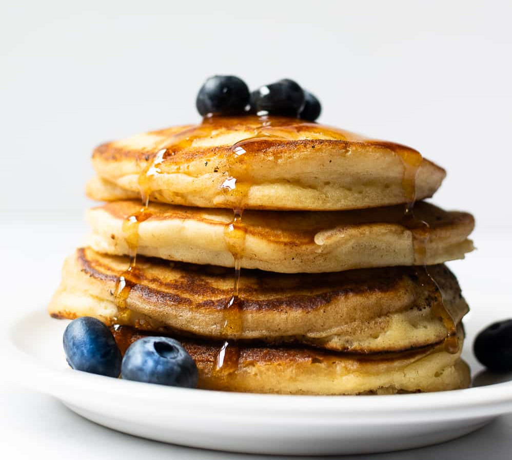

Pancakes
Home

Easy Fluffy Pancakes
These delicious pancakes are easy and quick to make. No scales? No problem, this recipe uses a mug to measure out all its ingredients. So simple and a great quick fix for breakfast.
Ingredients
- 1 mug of Self-Raising Flour
- 1 mug of milk (plant based milks also work fine)
- 1 egg
- a pinch of salt
Steps:
- In a medium sized bowl, sift your flour until there are no lumps.
- Make a well in your flour, proceed to add the egg and milk.
- Whisk until combined.
- Grab a frying pan and put it on a medium heat. Use a bit of butter or oil to grease the pan if it isnt non-stick.
- Using a ladle, spoon some of the pancake batter into your hot pan.
- wait for 3 minutes, or until the edges of the pancake appear cooked and the top turns matte.
- Use a spatuala to flip the pancake over to cook the other side.
- Once it is cooked all the way through transfer onto plate and enjoy!
Tip: if making a large batch, you can place a clean teatowel over the top of the pancskes to keep them warm while cooking